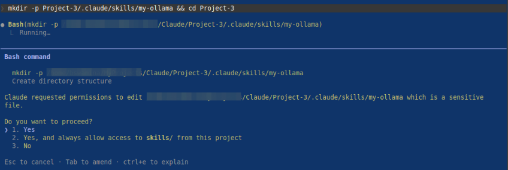
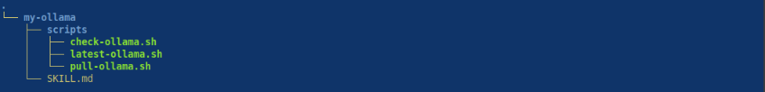
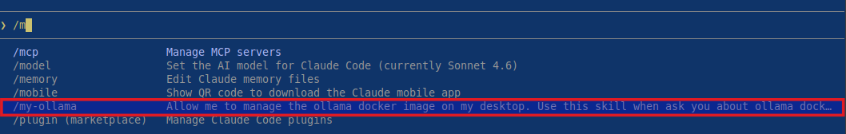
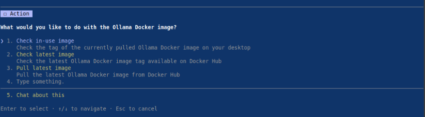
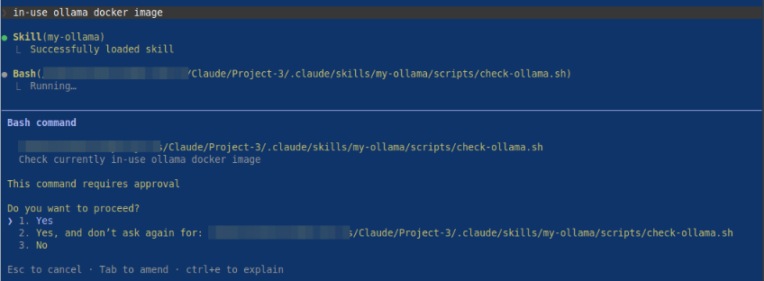
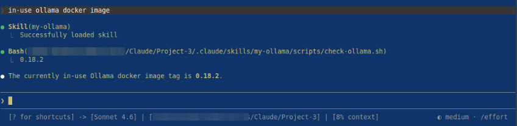
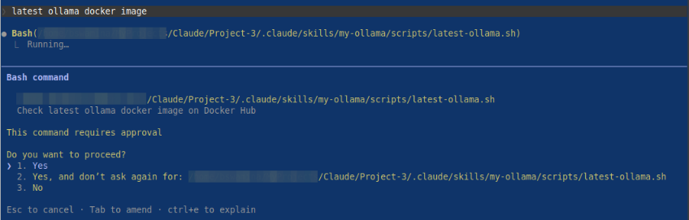
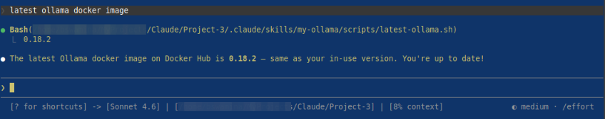

| PolarSPARC |
Claude Code Adventures - Part 4
| Bhaskar S | 03/22/2026 |
Overview
In Part 3 of this series, we covered the topic on Claude subagents, which are specialized AI agents that handle specific tasks in their own context (independent of the main context).
In this part, we will cover the topic on Claude Skills !!!
Skills in Claude are one of the most powerful ways to extend and teach Claude domain specific procedural knowledge and best practices, on how to handle tasks or workflows in that specifc domain, in are repeatable way.
In short, a skill in Claude is a folder containing the following artifact(s):
The required SKILL.md markdown file with the yaml metadata upfront (referred to as the yaml frontmatter)
An optional scripts/ sub-folder with the required executable code
An optional references/ sub-folder with additional markdown file(s), which could be loaded only as needed
An optional assets/ sub-folder with icons, fonts, templates, etc., that can be used in the output
Skills in Claude can help in the following use-cases:
Multi-step workflow process(es) that expect consistent behavior
Workflows that need coordinated access to multiple tools including MCP servers
Consistent creation of artifacts, such as, documents, web components, etc.
Hands-on with Claude
The custom Claude skill folder located at $HOME/.claude/skills/ applies to all the projects for the user, while the custom Claude skill folder located in a specific project ./.claude/skills/ applies just to that specific project.
For the demonstration, we will create a project Project-3 specific custom skill located at $HOME/Claude/Project-3/.claude/skills/my-ollama.
At the Claude prompt, let us make a request to create the new project folder and make that folder the working directory by executing the following request:
> mkdir -p Project-3/.claude/skills/my-ollama/scripts && cd Project-3
The request will cause Claude Code to seek our permission before proceeding as shown in the illustration below:

By confirming Yes, Claude Code will proceed with our request.
The custom Claude skill /my-ollama is for a very specific set of tasks follow to run local LLM using the Ollama platform.
The custom skill folder name MUST be all lowercase words separated by hyphens (referred to as kebab)-case.
Next, one must create the SKILL.md markdown file in the root of the custom skill folder. Note that the file name MUST be SKILL.md - absolutely no variations (like skill.md or SKILL.MD, etc) and is case-sentive.
The yaml frontmatter (the skill metadata at the start of the skill markdown file) at the minimum MUST include the name and description fields as indicated below:
--- name: custom-skill description: "What this skill does. Use it when the user asks about [specific phrases]" ---
Note that the skill name custom-skill in the markdown file MUST match the name of the custom skill folder.
The name and description fields are mandatory. In addition, there are other optional fields as follows:
disable-model-invocation :: If set to true, it will prevent Claude from loading this custom skill for use in workflows. It can only be triggered manually by issuing the command /custom-skill. The default for this field is false
user-invocable :: If set to false, it will not show up in the / (slash) command menu. The default for this field is true
allowed-tools :: The list of tools that this skill can invoke without asking permission from the user
model :: The model (sonnet, opus 4.6, etc.) to use when this skill is activated
context :: If set to a value of fork, this skill will run in a forked subagent context
We will go ahead and create three bash scripts in the folder /my-ollama/scripts.
The following is the bash script to check the docker image tag for the currently pulled image for Ollama :
#!/usr/bin/env bash
TAG=`docker images ollama/ollama --format "{{.Tag}}"`; if [ -z ${TAG} ]; then echo "NONE"; else echo ${TAG}; fi
The following is the bash script to check the latest docker image tag for Ollama in docker hub:
#!/usr/bin/env bash
LATEST=`skopeo list-tags docker://docker.io/ollama/ollama | jq -r .Tags[] | grep ".\...\..$" | tail -n 1`; echo ${LATEST}
The following is the bash script to pull the latest docker image for Ollama from docker hub:
#!/usr/bin/env bash
INUSE_TAG=`./scripts/check-ollama.sh`
LATEST_TAG=`./scripts/latest-ollama.sh`
if [[ ${INUSE_TAG} == "NONE" ]]; then
echo "Pulling the latest ollama docker image with tag ${LATEST_TAG}"
docker pull ollama/ollama:${LATEST_TAG}
fi
if [[ ${INUSE_TAG} != "NONE" && ${LATEST_TAG} != ${INUSE_TAG} ]]; then
echo "Removing the ollama docker image with tag ${INUSE_TAG}"
docker rmi ollama/ollama:${INUSE_TAG}
echo "Pulling the latest ollama docker image with tag ${LATEST_TAG}"
docker pull ollama/ollama:${LATEST_TAG}
fi
Finally, we will go ahead and create our custom skill SKILL.md markdown file in the folder /my-ollama.
The following are the contents of our custom skill SKILL.md markdown file:
--- name: my-ollama description: "Allow me to manage the ollama docker image on my desktop. Use this skill when ask you about ollama docker image [in-use ollama, latest ollama, pull ollama]" --- # Ollama Docker Image Manager Your are a useful assistant who will help me manage the ollama docker image on my desktop. You can *ONLY* help with the following tasks and NOTHING more: - Check and report on the tag of in-use ollama docker image. This is the currently pulled docker image in the desktop and ready for use - Check and report on the latest tag of the ollama docker image in docker hub - Pull the latest ollama docker image from docker hub # Scripts - ./scripts/check-ollama.sh | Use this script to check the currently in-use ollama docker image in the system. This script will echo the in-use image tag - ./scripts/latest-ollama.sh | Use this script to check the latest ollama docker image in the docker hub. This script will echo the latest image tag - ./scripts/pull-ollama.sh | Use this script to pull the latest ollama docker image from the docker hub
In the end, the folder structure along with the files for our custom skill my-ollama is as shown in the illustration below:

At the Claude prompt, type the following characters (without pressing the ENTER key):
> /m
The Claude menu options appear as shown in the illustration below:

Notice the highlighted menu option - it is our custom skill my-ollama !!!
At the Claude prompt, complete typing the name of our custom skill /my-ollama and press the ENTER key. Claude Code will process our skill request and respond with actions as shown in the illustration below:

Notice all the supported actions corresponding to our custom skill my-ollama !!!
Press the ESC key to exit our custom skill actions menu options.
At the Claude prompt, type the following prompt and press the ENTER key:
> in-use ollama docker image
Claude Code will proceed to ask the user for permission as shown in the illustration below:

By confirming Yes, Claude Code will execute the appropriate script and display results as shown in the illustration below:

Now, at the Claude prompt, type the following prompt and press the ENTER key:
> latest ollama docker image
Once again, Claude Code will proceed to ask the user for permission as shown in the illustration below:

By confirming Yes, Claude Code will execute the appropriate script and display results as shown in the illustration below:

WALLA - with this, we conclude the Part 4 of the Claude adventure series !!!
References